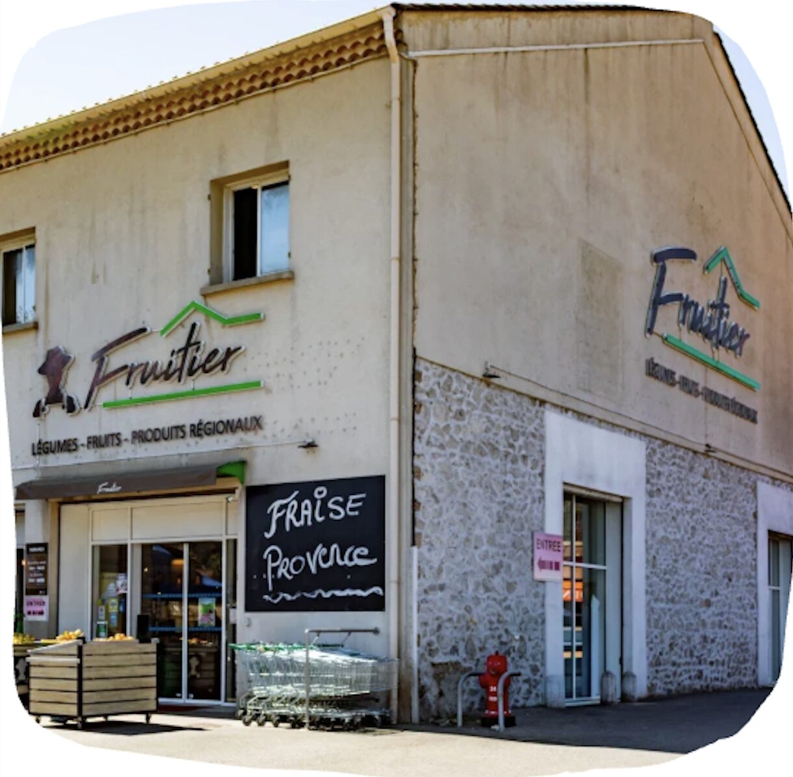
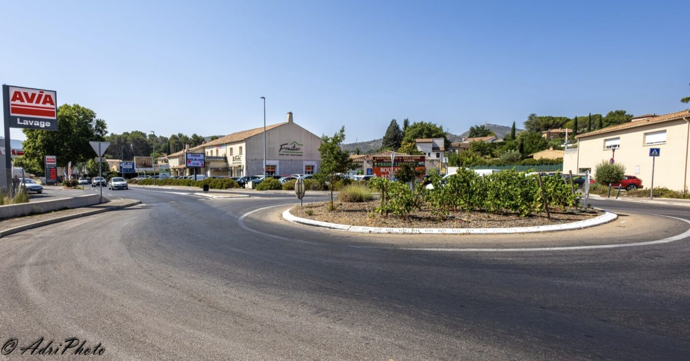

notre histoire, notre passion
Depuis plus de 20 ans, votre primeur de confiance au cœur de La Destrousse et des saveurs de Provence.

Véritable institution à La Destrousse depuis plus de 20 ans, Le Fruitier est le rendez-vous incontournable des amoureux des bonnes choses. Depuis deux décennies, notre mission reste la même : mettre à l'honneur le goût authentique, la fraîcheur absolue et le savoir-faire de nos producteurs.
Votre marché du quotidien… Chaque matin, nous sélectionnons avec exigence le meilleur des vergers et des potagers. Des fruits juteux aux légumes de saison croquants, nous vous proposons une qualité premium accessible pour régaler votre table au jour le jour. Chez nous, la botte de radis de la semaine est choisie avec le même amour que nos produits les plus rares.
Et vos envies d'exception. Au fil des ans, Le Fruitier a grandi avec vous pour devenir une épicerie fine de référence et un lieu d'inspiration unique pour vos cadeaux gourmands. Nous avons déniché pour vous des pépites artisanales régionales : huiles d'olive d'exception, tartinables fins pour l'apéro, douceurs d'antan et une cave de vignerons récoltants.
Que vous veniez chercher vos indispensables du marché ou composer un magnifique panier garni sur-mesure pour offrir, vous trouverez toujours ici le conseil, le sourire et l'excellence qui font notre réputation depuis 20 ans. Poussez la porte de notre boutique à La Destrousse et laissez-vous guider par les saisons !
Notre magasin est idéalement situé juste après le rond-point de La Destrousse, bien visible depuis la route : impossible de nous rater en arrivant. Repérez l'enseigne Le Fruitier, et vous y êtes.
Un grand parking se trouve juste devant notre magasin, partagé avec les commerces voisins. Ce n'est pas un parking privé, mais il est spacieux et vous trouverez toujours une place pour vous garer facilement.
NOUS CONTACTER